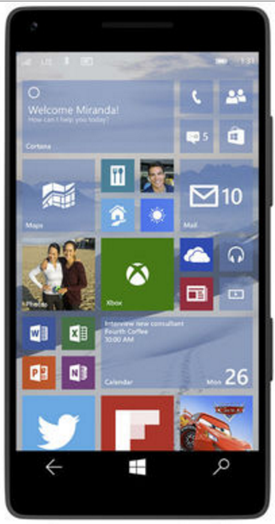

역사
IBM사가 1992년에 설계하여 그 해에 미국 네비다 주의 라스베이거스에서 열린 킴택스에서 컨셉 제품으로 전시되었다.
스마트폰은 컴퓨터를 결합한 무선 휴대전화기이다. 인터넷 검색, 전자우편, 간단한 문서 편집, 카메라, 오디오 및 비디오 재생 등 PC의 기능을 거의 모두 갖추고 있다.
IBM사가 1992년에 설계하여 그 해에 미국 네비다 주의 라스베이거스에서 열린 킴택스에서 컨셉 제품으로 전시되었다.
안드로이드는 후대 전화를 비롯한 휴대용 장치를 위한 운영 체제와 미들웨어, 사용자 인터페이스 그리고 표준 응용 프로그램을 포함하고 있는 모바일 운영 체제이다.
아이폰은 2007년 1월 9일, 애플이 발표한 휴대 전화 시리즈이다. 미국 샌프란시스코에서의 역할도 2007에서 애플의 창업자 중 한명인 스티븐 잡스가 발표했다.
스마트폰샘플
| 갤럭시7 | 아이폰6 | 타이젠 | 윈도우폰 | 노키아폰 |
|---|---|---|---|---|

|

|

|
 |

|